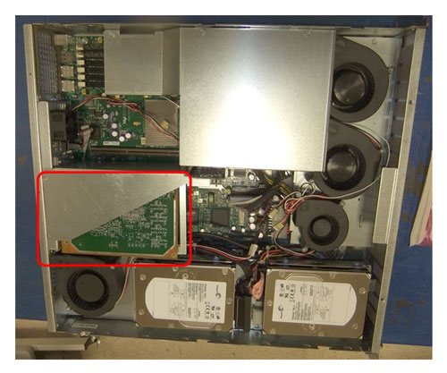
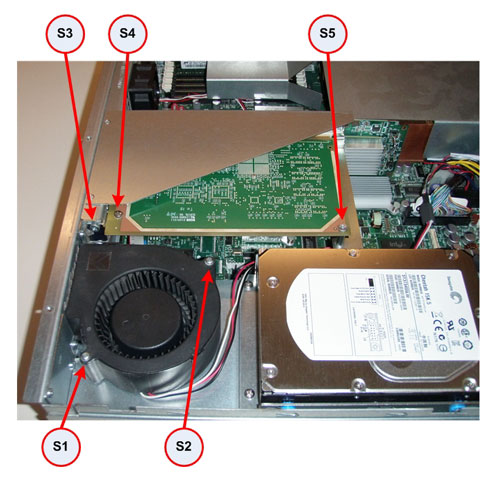
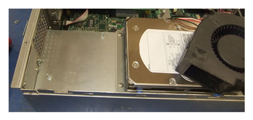
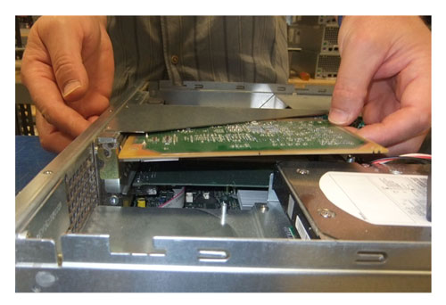
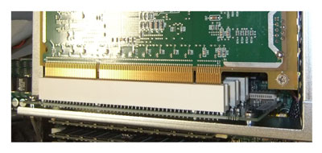
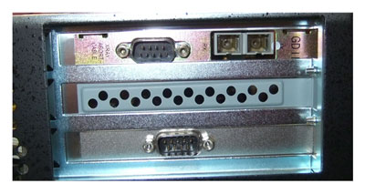
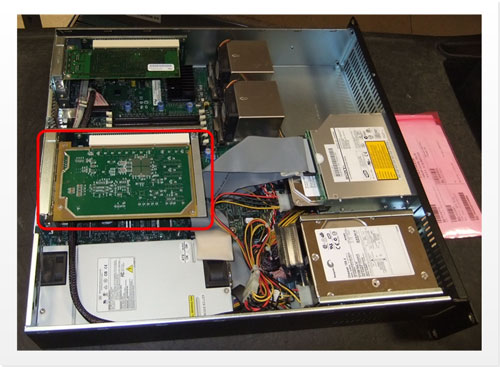
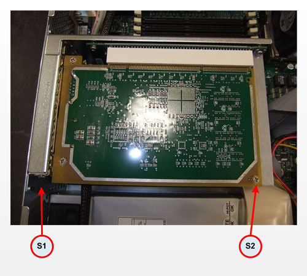
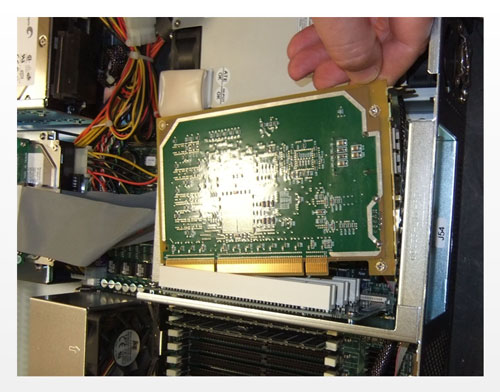

Operating Documentation
Direction 5181178-800, Rev# 16
Module Version 0.1, Version Date 9/24/12
Operating Documentation |
| ||||
| ELECTROCUTION HAZARD | ||||
| HIGH VOLTAGE PRESENT | ||||
| USE PROPER LOCKOUT / TAGOUT PROCEDURES BEFORE REPLACING THE COMPONENTS. |
| ||||
| FOLLOW ALL REQUIRED SAFETY AND PPE PROCEDURES CUSTOMARY FOR YOUR ORGANIZATION WHEN WORKING ON THIS PRODUCT. | ||||
| Condition | Reference | Effectivity |
|---|---|---|
Access to both the front and rear of the Operator Console is required. Move the console away from walls and remove obstacles in room. | - | - |
Only trained service personnel should service GE CT or PET/CT Scanners. | - | - |
Select one of the following methods to Power Off the Operator Console:
Power OFF the Operator Console at the front panel switch.
Make sure to follow all Lockout/Tagout requirements while performing this procedure. Refer to Equipment Service - Lockout -Tagout - PPE procedure. For added protection, disconnect the Twist-N-Lock Main Power Cable from rear of console.
Remove the front and rear Operator Console covers.
Remove the cable connections to the DARC computer chassis. Verify each cable is clearly marked; if necessary, add a label for clarity.
Remove and retain the four (4) front mounting screws, and slide out the DARC computer with DIP board that needs replacing.
Lay the DARC computer on a flat work surface.
Follow either section 4.3.1 (DIP Board Replacement on Jarrell DARC2 Computers) or 4.3.2 (DIP Board Replacement on Westville DARC2 Computers), depending on version of DARC2 Computer. The two sections are different due to DARC2 Computer chassis differences.
Remove the top cover from the DARC computer, retaining the screws for reuse later.
Locate DIP board at the rear of the DARC computer chassis.
Illustration 1: DIP Board Location in Jarrell DARC2

Remove and retain the two (2) screws (S1 & S2) that hold the Chassis Cooling Fan to the DARC computer chassis.
Illustration 2: Screw Location for DIP Board Removal

Remove the Fan and set aside, leaving the Fan’s power connection in place.
Illustration 3: Chassis Cooling Fan Removal

Remove and retain the three (3) screws (S3, S4 & S5 - See Illustration 2) that hold the DIP Board to the DARC computer chassis.
Carefully remove the DIP Board from its PCI Riser card in the DARC computer.
Illustration 4: DIP Board Removal

Insert the replacement DIP Board into the DARC computer. Make certain the DIP Board is properly aligned in the PCI Riser card and the back side of the DARC computer chassis. The edge connector must be fully and evenly inserted.
Illustration 5: DIP Board Aligned with PCI Riser

Illustration 6: DIP Board Aligned with DARC Chassis

Attach the replacement DIP Board to the DARC computer chassis using the three (3) screws (S3, S4 & S5 - See Illustration 2) retained earlier. Tighten the three (3) screws.
Install the DARC computer chassis Cooling Fan using the same two (2) screws (S1 & S2 - See Illustration 2) removed earlier.
Reattached the DARC computer chassis Top Cover and secure with screws retained earlier.
When finished, continue with Section 4.4.
Remove the top cover from the DARC computer, retaining the screws for reuse later.
Locate DIP board at the rear of the DARC computer chassis.
Illustration 7: DIP Board Location in Westville DARC2

Remove and retain the two (2) screws (S1 & S2) that hold the DIP board to the DARC computer chassis.
Illustration 8: Screw Location for DIP Board Removal

Carefully remove the DIP board from the DARC computer.
Illustration 9: DIP Board Removal

Insert the replacement DIP Board into the DARC computer. Make certain the DIP Board is properly aligned in the PCI Riser card and the back side of the DARC computer chassis. The edge connector must be fully and evenly inserted. (See Illustrations 5 & 6)
Attach the replacement DIP board to the DARC computer chassis using the two (2) screws (S1 & S2) retained earlier. Tighten the two (2) screws.
Reattached the DARC computer Chassis Top Cover and secure with screws retained earlier.
When finished, continue with Section 4.4.
Slide the DARC Computer into the Operator Console from the front.
Secure the DARC Computer chassis to the Operator Console using the four (4) mounting screws retained earlier in the procedure.
Reconnect the cables removed earlier from DARC Computer.
Verify the power switch (located at the rear of the DARC computer, if present) is set to the ON position.
Reconnect the Twist-N-Lock Main Power Cable from rear of console and remove Lockout Tagout protection applied earlier.
Power On the Operator Console at the console’s front panel switch.
Execute a few test scans and verify that the image(s) reconstruct and are displayed.
Reinstall Console Front and Rear Covers.